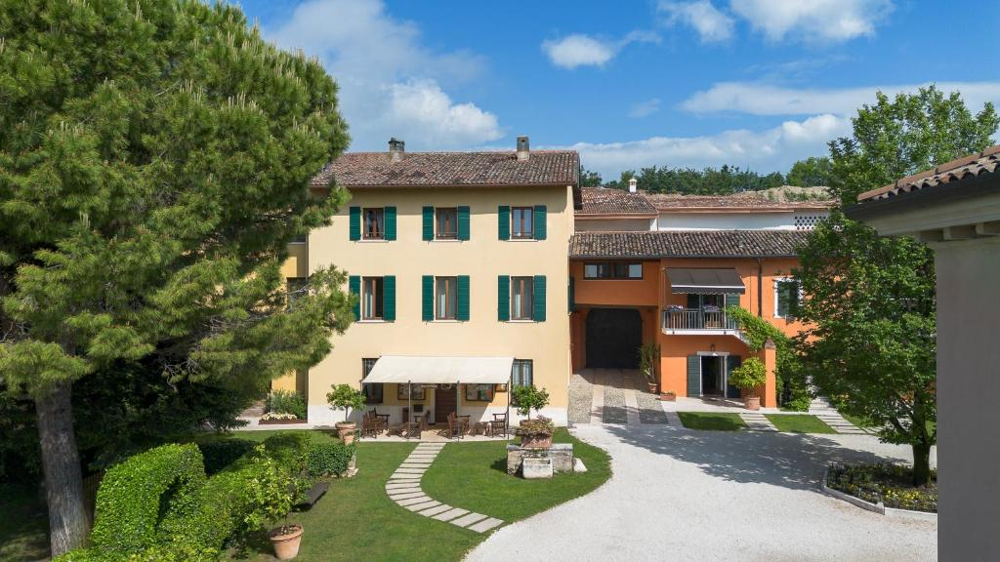
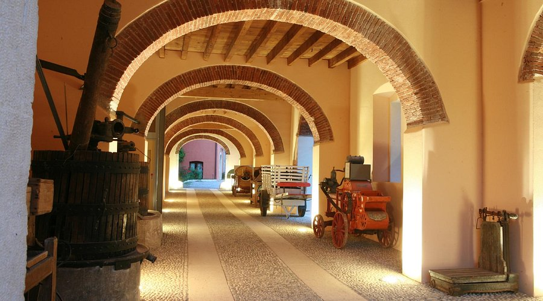

🚗 Drive
Como → Sirmione
100 km2h drive10:00 depart
🛣 A4 autostrada — save scenic energy for Strada della Forra tomorrow.
Open in Google Maps →
🗓 Schedule — Pick A or B
Plan ALong lunch Sirmione
Plan BLunch Desenzano
10:00
🚗 Depart Como (2.5h via Bergamo/Brescia)
12:30
Arrive Sirmione, park outside gates
13:00
🍝 Seated lunch Sirmione old town (90 min)
14:30
Wander Sirmione (Scaliger Castle exterior, narrow streets)
15:00
🏛 Grotte di Catullo Roman ruins (1h)
16:00
Walk back, coffee/granita
16:30
🚗 Drive to Isola del Garda pier
17:00
🏝 Isola del Garda tour (~2.5h)
20:30
🥗 Light dinner near hotel
Trade-off: Sirmione all day — *the* postcard, long lunch lakeside. Touristy at peak, prices reflect.
10:00
🚗 Depart Como (2.5h drive)
12:30
🚗 Detour to Desenzano del Garda (15 min south of Sirmione)
13:00
🍝 Seated lunch Desenzano (90 min) — less touristy, locals' lakefront
14:45
🚗 Drive Desenzano → Sirmione (15 min)
15:00
🏛 Sirmione old town + Grotte di Catullo (2h)
16:30
🚗 Drive to Isola del Garda pier
17:00
🏝 Isola del Garda tour (~2.5h)
20:30
🍷 Proper dinner Sirmione old town
Trade-off: Desenzano = where locals eat. Better value. Sirmione mid-afternoon less crowded.
🏝 Isola del Garda
🏝 Isola del Garda 39–49 EUR/pp BOOK AHEAD
Neo-Gothic villa + gardens + wine tasting + olive oil DOP. ~2.5h.
Closed Mondays! Boat from Sirmione ~30 min.
Book here ·
Maps →
📌 Booking note Isola pier varies by day. Book Tue Jun 2, check port. Aim later slot (~16:30) if offered.
🍝 Where to Eat
🍝 Trattoria Clementina (Sirmione) ~25–35 EUR/pp
Authentic with courtyard. Zero tourist BS. Local lake fish. Piazza Rovizzi.
Maps →
🍷 Osteria del Vecchio Fossato (Sirmione) ~25–35 EUR/pp
Hidden in old walls, intimate. Tagliatelle with trout, aole sale. Via Antiche Mura 16.
Maps →
🍽 Casa dei Pescatori (Sirmione) ~30–40 EUR/pp
ON the water near Castello. Lake fish, organic/seasonal.
Maps →
🍝 Trattoria Da Renato (Desenzano) ~20–30 EUR/pp
Family place. Good prices. Fish + meat. Via Gramsci 61.
Maps →
Must Try: Bigoli con le sarde del Garda THE DISH
Thick pasta with Garda lake sardines. Order it everywhere.
🛏 Where to Sleep


🌾 Agriturismo La Filanda ~80–120 EUR
Historic 1800s farmhouse on Garda shores. Pool.
Maps →
🛏 B&B da Beatrice ~70–90 EUR
Garden + pool. Quiet. 2km from Sirmione center.
Maps →
🌾 Agriturismo Il Ghetto ~70–100 EUR
Countryside 1.2km from lake. Rustic vibe.
Maps →
🏖 · 🌙 · ☂
🏖 Swim: Lido delle Bionde (thermal spring water mixes in — warmer!) · Jamaica Beach (flat rocks, locals).🌙 Nightlife: Desenzano = THE Garda nightlife hub. Bars, live music, clubs until 2am.☂ Rain: Terme di Sirmione — thermal spa day. Indoor pools + treatments.